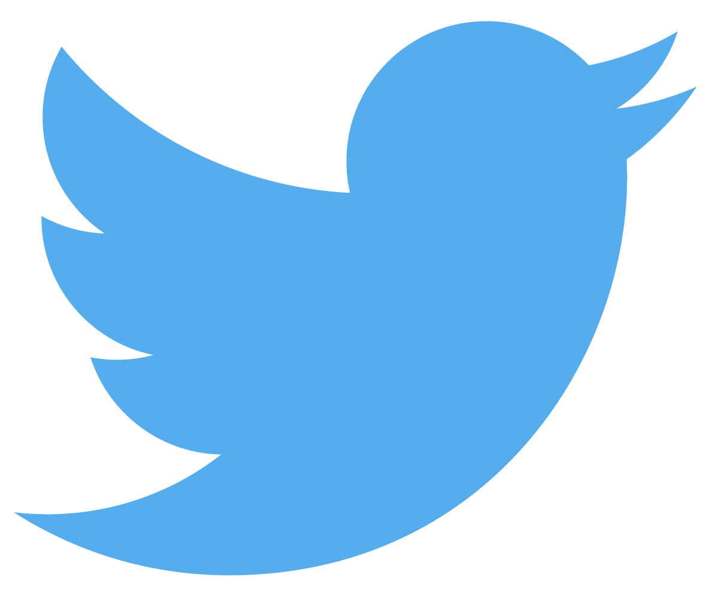

History
Twitter's origins lie in a "daylong brainstorming session" held by board members of the podcasting company Odeo. Jack Dorsey, then an undergraduate student at New York University, introduced the idea of an individual using an SMS service to communicate with a small group. The original project code name for the service was twttr, an idea that Williams later ascribed to Noah Glass, inspired by Flickr and the five-character length of American SMS short codes. The decision was also partly due to the fact that the domain twitter.com was already in use, and it was six months after the launch of twttr that the crew purchased the domain and changed the name of the service to Twitter. The developers initially considered "10958" as a short code, but later changed it to "40404" for "ease of use and memorability". Work on the project started on March 21, 2006, when Dorsey published the first Twitter message at 9:50 p.m. Pacific Standard Time (PST): "just setting up my twttr".
Description
Twitter, Inc. is an American online news and social networking service on which users post and interact with messages known as "tweets". Tweets were originally restricted to 140 characters, but on November 7, 2017, this limit was doubled for all languages except Chinese, Japanese, and Korean. Registered users can post, like, and retweet tweets, but unregistered users can only read them. Users access Twitter through its website interface, through Short Message Service (SMS) or its mobile-device application software. Twitter, Inc. is based in San Francisco, California, and has more than 25 offices around the world.
